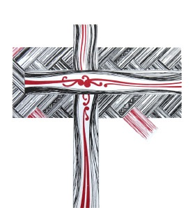

The opportunity
The journalism is excellent, and the archive behind it is worth a great deal. The website is what’s getting in the way of both.
eZ Publish, the platform underneath, reached end of life years ago, and the templates go back further than that. Everything you publish costs more effort than it should.
So rather than just tell you, I built it. There’s a working concept you can open on your phone right now, made from your own stories and photographs, and a plain plan for the system behind it. The point of the plan is that you could run the site on a deadline without ringing anyone.
- c. 2008CMS generation · end of life
- 770pxLargest image the system can serve
- ~100Authors in one dropdown menu
- 0Story thumbnails on mobile lists
What I found
I read the site the way your readers do, on a phone and on a laptop, usually hunting for one particular story. Then I looked underneath it. The findings below are grouped by where the problem shows up.
- Blocking
- Significant
- Note
Reading experience
- Blocking. Text-only story rivers, even on section pages.
- Blocking. No thumbnails on mobile.
- Significant. Article galleries load as a black box (Galleria, 2012).
- Significant. Dense link lists (“Worth a look”) mix external and internal stories without labels.
- Note. Headline colours differ between desktop (maroon) and mobile (blue).
- Note. Comments locked behind site accounts, with near-zero use.
Information architecture
- Blocking. A ~100-author “Blogs” dropdown, most items external links.
- Significant. 11 overlapping News subcategories (Common Life, Pastoral, Tāngata…).
- Significant. “This Church” and “Worship” menus are mostly external links styled as site sections.
- Note. Style drift: “Tikanga Pasifika” in the menu, “Tikanga Pasefika” in articles. A small sign that there’s no style guide in the system, only in people’s heads.
Actions & trust
- Blocking. Media enquiries route to a personal Gmail address.
- Significant. “Subscribe” is a two-field coupon.
- Significant. No submit-a-story path for parishes.
- Note. No newsletter archive.
- Note. The social link goes to Twitter.
Technical
- Blocking. eZ Publish CMS: end of life, and a security and maintenance risk.
- Significant. jQuery / Bootstrap-2 era front end.
- Significant. Images capped at 770px and heavily compressed.
- Significant. No structured data or OpenGraph strategy, so stories share poorly to social and messaging apps.
- Significant. No performance budget; multiple ad slots load as images.
- Note. GA4 present via a legacy tag, alongside StatCounter.
The site today
The “Blogs” menu today
Blogs104 items · one flat list
Faithful recreation of the current “Blogs” menu. Every name is its own click target, and most of them lead off the site. I think contributors would be better served by a section of their own and an index you can actually read.
An article today
An article today. Good reporting and good photography, in a template that gives the story a 620px column and hides the gallery behind arrows. Two columns of unrelated links sit alongside it the whole way down.
None of this is a criticism of the people running Taonga. It’s what happens when good editors carry a 2008 platform for two decades. The writing kept getting better and the tools never did, and that isn’t something an editor can fix from the inside.
Who the site serves
The site has five audiences and has to serve all of them at once. I tested every recommendation in this document against that list.
| Audience | They come to… | The redesign gives them… |
|---|---|---|
| Parishioners & clergy across three tikanga | Follow church news; find resources | A legible, bilingual, mobile-first read |
| Church communicators & parish offices | Get stories out | A submit-a-story pipeline, and a CMS they can run without a developer |
| Media & researchers | Find the official record | Clean topic pages, search, a structured archive, working share previews |
| The worldwide Communion & diaspora (NZ, Polynesia, beyond) | Keep connected | Fast pages on modest connections; curated world news with honest source labels |
| Ngā uri whakatipu (future generations) | The archive | Durable URLs, a preserved magazine archive, exportable content |
The direction

The mark today
Hand-drawn · a cross woven from flax, a red thread through black
Redrawn for screen
Three strands each way · the red centre passes over, the outers under
Your existing mark, a cross woven from flax with a red thread through black, is, I think, one of the best ideas this brand ever had: three strands, one weave, made by hand. I didn’t want to replace it, so I redrew it for screen and let the weave carry through the masthead, the section dividers and the footer. You’re looking at it on this page. Redrawing a mark people have known for years isn’t something I’d want to do without asking, so if it doesn’t sit right, say so and it stays as it is.
-
01
Treat the content as taonga.
Photographs shown at a size that does them justice, and headlines set like a broadsheet. The archive gets looked after rather than left to run on its own.
-
02
Three strands, one weave.
The three-tikanga partnership is part of how the site is organised, down to the navigation and the topic system.
-
03
Manaaki the reader.
The audience is older and spread out, so the body type is 18px, contrast clears AA+, links look like links, and pages stay quick on rural and Pacific connections.
-
04
Both languages breathe.
Te reo Māori and Pasifika terms set correctly, macrons and all, with a glossary for readers still learning. The final wording gets confirmed with tikanga partners before it ships. That isn’t a call for me to make.
The design system
Palette
- Paper#FBF9F4Page ground — warm newsprint
- Wash#F2EDE3Tint panels, image mat
- Hairline#E3DCCERules inside rivers
- Ink#1C1917Primary text, warm black
- Ink soft#5B554EMeta, captions
- Ink faint#8A8378Folios, large numerals
- Kōkōwai#9E1B26A deeper version of their liturgical red
- Kōkōwai deep#7A121CHover, active
- Gold#A87A2AThe weave strand; kickers on dark
- Moana#14555ECommunion and external-source chips only
- Night#201B17Dark bands, footer
Type
Newsreader · display
opsz auto · 800
Ngā rongo o te wā
Newsreader · headline
opsz auto · 700
Equity leads historic St John’s transfer
Newsreader · body
18px / 1.68
The 67th General Synod has passed an historic Bill empowering Te Pīhopatanga o Aotearoa to exercise tino rangatiratanga over the St John’s College Trust Board education fund distributions.
Archivo · UI
700 · 0.12em
Te Hīnota Whānui 2026 · Nukuʻalofa
The weave
At 8px, as it runs along the page edge and between sections.
Enlarged. Kōkōwai, gold and ink interleave properly here: each strand passes over, then under, then over again.
Buttons & chips
Two-pixel corner radius, which reads as editorial rather than app-like. Moana teal is reserved for links that leave the site, so a reader can tell before clicking.
Imagery
Archbishops Justin Duckworth, Sione ʻUluʻilakepa and Don Tamihere preside at Te Hīnota Whānui 2026. Photo: Anglican Taonga.
Matted on wash, never enlarged past its real resolution, and always captioned and credited. No filters on photographs of people, which matters more here than it would on most sites.
The new architecture
Today there are seven menus, mixing internal sections with external links. They become six sections and one topic system that cuts across all of them.
Scroll the diagram sideways on a narrow screen.
| Today | Renewed |
|---|---|
| News — 11 subcategories | News + a topic system: Te Hīnota Whānui, Tikanga Māori / Pākehā / Pasefika, Justice & Advocacy, Aotearoa, World… |
| Blogs — a 100-item menu | Comment | He Whakaaro, with a contributors index page |
| Features + Culture | Features — Spirituality · Social Justice · Books & Film |
| Worth a look | Around the Communion — curated external links, labelled by source |
| Magazine advert tile | Magazine section — the 1999–2018 archive via Pūmotomoto |
| Worship + This Church — external links | Resources hub + a footer directory |
| Contact / Subscribe / Advertise | Take action cluster — Subscribe · Submit a story · Media enquiries · Advertise |
Two things to note
Every old URL redirects to its new home. The map gets generated during migration, so nothing dead-ends and twenty years of search standing carries over.
Topics replace category silos, so one story can live in Te Hīnota Whānui and Tikanga Māori at once, without being published twice.
The network: this page is not an island
I had a look across the rest of the province’s web presence while I was writing this. What’s there is a church that’s busy online and barely joined up. Wellington and Waiapu run modern diocesan sites. Anglican Missions runs live appeals and a weekly prayer blog. The national site holds the canonical directory of all three tikanga, five hui amorangi, seven dioceses and Polynesia, tucked away in a map page on the same 2008-era platform as Taonga. In one week this August the same General Synod got reported three times, by Taonga, by Wellington and by others, without a single link between them. The national site already lists Anglican Taonga News as one of its four most-wanted destinations, so the province clearly treats this site as its news organ. Nothing joins those pieces up at the moment, and this is the site best placed to do it. A fair bit of what follows treats Taonga as the station the rest of the network routes through. That’s a bigger role than a website redesign usually asks for, and not mine to hand you. If it’s more than Taonga wants to take on, the rest of this still works without it.
That changes what the top of the page should carry. A masthead menu works best when it lists what readers are trying to do rather than what the organisation has filed. Two of those jobs are missing from the bar today, and the Magazine holds a top-level seat. So the bar looks like this.
| In the bar | What it carries |
|---|---|
| News | The front page and topics. Around the Communion folds in as the World strand, so it keeps its source-labelled curation but stops taking up a seat of its own. |
| Comment · Features | As built: named voices and the long read. |
| Noticeboard (new) | Events, ordinations, hui and training, plus vacancies. Vacancies pull steady traffic on sites like this, and it may be worth charging for them. |
| The Church (new) | The station hub: find a church (fronting the canonical directory), a designed explainer of the three-tikanga structure that media can finally cite, Around the Hāhi (a domestic wire of diocese and agency headlines, source-chipped, linking out), official statements for journalists, live appeals, and the Magazine archive’s new home. |
| Resources | The worship-week toolbox, as built. It keeps its seat because clergy open it weekly. The Magazine doesn’t get opened weekly, so it moves. |
I haven’t proposed a mega menu. There’s a 104-item dropdown recreated earlier in this document, and hover panels are about the most error-prone desktop pattern going for an older audience. The breadth a mega menu would hold goes into the index overlay instead. That’s the search surface grown into a full concourse board of sections, topics, network links and actions, opened by click or by “/”, and identical to the mobile drawer. You get the same reach without anyone having to hover.
The station runs both ways. Per-topic feeds and clean embed cards let diocesan sites carry Taonga headlines home, and the weekly mailout gains a your-diocese segment. Advertising gets held to the same standard as everything else here. Paid vacancy and notice listings come first, then a labelled partner band for agencies, schools and colleges, an annual suppliers directory aimed at the parish-office market, and sponsored strands with firm rules: everything marked Partner, no involvement in news judgment, and nothing at all on sensitive coverage. I think that revenue could carry a meaningful share of the site’s running costs.
Federation is phased so nobody has to trust it blind. A: link out generously and ingest the two or three diocesan feeds that already exist. B: open the Noticeboard and paid vacancies. C: the directory partnership with the General Synod office, and syndication out. If you stop after A, A still works on its own.
The templates
Four templates carry the whole site. The live concept fills in what sits around them: section fronts for Comment and Features, a Noticeboard, The Church hub, plus the Magazine, Communion and Resources pages. Eleven views in total, all of them clickable, running the revised menu from the section above. The schematics below are just the shape of each one, so the live version is worth more of your time if you’ve got five minutes.
Home
The front page: what matters now, and the shape of everything else.
- Lead package on a 7 / 5 split: headline, standfirst, matted photograph with a real caption and credit.
- Three secondary leads, hairline-separated, each labelled by section.
- Special-coverage band on night (“One Mission, One Ocean, One Vaka”) with a scroll-snap strip of Synod photographs.
- Latest / Ngā rongo o te wā river with thumbnails, beside a Comment | He Whakaaro panel of four contributors.
- Around the Communion link-cards, each carrying its source chip.
- Magazine and Resources split, then the mailout band.
What changedPictures come back into the lists, and opinion and world news get labelled for what they are. The Synod coverage gets its own home instead of being scattered down one column.
Article
The record: one story, read comfortably from start to finish.
- Breadcrumb, kicker, headline, standfirst, byline with a working “copy link”.
- Matted hero photograph with caption and credit; body set to a 68-character measure.
- Pull quote carried on a red strand; a two-up photo row inside the story where the gallery pop-up used to be.
- Kupu glossary buttons on the first use of each te reo Māori and Pasifika term.
- Tags, a “Mō tēnei tuhinga | About this story” box, related stories, then a small subscribe prompt at the end.
- Meta rail on wide screens: publication dates, share, and an in-story contents list.
- Reader controls: three text sizes, a night edition, keyboard reading, and photographs that open large with their captions.
What changedThe gallery black box is gone and the photographs sit inside the story. Te reo terms carry a short explanation, checked with people who would know.
Comment essay
Gives a named writer proper room.
- Warmer art direction: a wash header, no news kickers, a gold “HE WHAKAARO · COMMENT” label.
- Author card (portrait, role and date) set before the first line, so the reader knows who is speaking.
- Three-line red drop cap; quotations set as blockquotes rather than indented paragraphs.
- Closing stanza centred beneath a small woven knot.
- “More from He Whakaaro” with three contributors and portraits.
What changedA section and a contributors index replace the hundred-name dropdown, so finding a particular writer takes one step instead of a long scroll.
Topic page
All the coverage of one kaupapa in one place.
- Dark topic header: the kaupapa, the theme line, the dates, the story count.
- Filter chips — All · Reports · Photo essays · Comment.
- One featured two-wide card, then a card grid. Stories with no photograph get a typographic card on wash instead of a grey placeholder.
- “Follow this topic”, and a way back to News.
What changedTopics cut across the old eleven subcategories, so a story can sit in Te Hīnota Whānui and Tikanga Māori at once without being published twice.
Easy to update — the editor’s experience
The test for every decision in this section: whoever is running this site next year shouldn’t need a developer on a news day.
Recommended: a headless CMS (Sanity) with a static front end
Sanity is where I landed, though I’d want to hear it if someone on your side has history with one of the others. Why it suits a team this size:
- Two people can work on the same story at once without standing on each other.
- Live visual preview, so the editor sees the real page while they’re typing it.
- Roles and a review workflow, which means guest pieces can be staged before they go out.
- Scheduled publishing.
- The free tier covers a team this size, and the paid steps above it are predictable.
- Everything is stored as structured data you can export as JSON. If Taonga ever leaves Sanity, twenty years of stories come with it.
| Option | The trade |
|---|---|
| WordPress + block editor | Most familiar; more maintenance, a wider plugin surface, and hosting responsibility. |
| Storyblok | Excellent visual editing; per-seat pricing grows. |
| Keep eZ — the Ibexa upgrade path | Expensive enterprise licensing; the wrong size for this team. |
| My recommendation — Sanity | It gives the editor a live preview and a real workflow, and the archive stays yours to take elsewhere if you ever want to. |
The content model
-
Story
- kicker
- topic(s)
- headline
- standfirst
- body
- lead image + focal point
- gallery
- kupu terms
- related
-
External link
- title
- source
- URL
- note
-
Contributor
- name
- role
- portrait
- bio
-
Topic
- title
- reo pairing
- description
-
Magazine issue
- cover
- year
- archive link
-
Notice / Resource
- title
- blurb
- link
-
Site settings
- nav
- footer
- banner
Publish a story in four steps
-
New story
Paste the text and drop the photos in. The system resizes them, crops to a focal point you set, and won’t let you past the alt-text prompt.
-
Topics & contributor
Pick the topics and the contributor. It also suggests glossary terms it finds in the text, and you accept or ignore each one.
-
Preview
You see exactly the live page, on mobile and desktop, before anyone else does.
-
Publish or schedule
The story lands on the home page, its topic pages, the RSS feed and the weekly mailout draft, automatically.
Guardrails
- The templates hold the style, so nobody on the desk is ever asked to pick a font or a colour.
- Alt text is a required field.
- Search is macron-aware, so “whanui” finds “whānui”.
- Broken-link checks run over the curated external links.
- Guest Comment pieces go through a staged review before publication.
Newsletter
The mailout is built from published stories through a Mailchimp or Buttondown integration. The archive page is public, so a subscriber who missed last month’s issue can go and find it themselves.
Training & handover
Two recorded sessions and a one-page “news-day runbook”, written for the person who’ll be doing this at 8am on a Monday. There’s a Singh Studio support retainer if you want one, and the site doesn’t need it to keep working.
Build approach
The build is static-first and edge-hosted. A news site needs to still be working in ten years, and that rules out a lot of fashionable choices.
- Astro — the front end
Static pages by default, with interactive bits only where they earn their place: search, the glossary and the galleries. It’s very fast on a poor connection.
- Design tokens in vanilla CSS
The system in section 4, written as plain custom properties. There’s no framework underneath it to go out of date.
- Cloudflare Pages / Workers — hosting
Close to the New Zealand and Pacific edges. Hosting costs effectively nothing, and every change gets its own preview URL.
- Pagefind — search
It normalises macrons, and it runs on your own site rather than depending on a search service that could disappear or start charging.
- Images — build-time pipeline
AVIF and WebP, responsive srcset and focal crops. The 770px cap goes, and originals get archived at full resolution.
- Analytics
GA4 carries over so the history stays unbroken, with Plausible alongside it if you want something simpler to read.
- RSS
Kept at the existing feed URL. Anyone subscribed today stays subscribed.
- Sharing — OpenGraph & schema.org
OpenGraph and Twitter cards, plus NewsArticle structured data. Stories will finally show a picture and a headline when someone pastes a link into a chat.
- Accessibility
WCAG 2.2 AA is the target, and it gets a proper audit before launch.
- Security
A static front end has almost no attack surface. What’s running now is an end-of-life PHP CMS.
Performance budget
- < 1.8sLCP on 4G
- < 200KBCritical path
- < 0.05Cumulative layout shift
Migration
- Scripted crawl and export of the eZ Publish content: roughly twenty years of stories.
- Structured import, with author and topic mapping.
- A full 301 redirect map.
- A link-check pass across the whole site.
- An archive snapshot gets kept whatever else happens.
The only editorial freeze is on cutover day itself. You keep publishing right up to the switch.
Phases
Five phases, and the week counts are indicative rather than promises. Phase 0 is all conversation and no design work.
-
Phase 02 wks
Whakawhanaunga & discovery
- Content audit sign-off
- Tikanga consultation, including reo labels
- Analytics baseline
-
Phase 13 wks
Design system & templates
- This concept refined against your feedback
- All templates drawn and built
-
Phase 24–5 wks
Build & CMS
- Astro + Sanity
- Editor workspace
- Search and newsletter
-
Phase 32–3 wks
Migration & QA
- Scripted import and redirects
- Accessibility and performance audits
- Editor training
-
Phase 41 wk +
Launch & care
- Cutover and monitoring
- Runbook handed over
- Optional ongoing retainer
Pricing: I’ll quote the whole path or phase by phase, whichever suits you. Either way the number comes with the hours behind it itemised, so you can argue with any line on it.
Next steps
Open the live concept and click around when you get a chance, especially on your phone.
Tell me what lands and what doesn’t. I’d rather hear it blunt than polite, and nothing in the concept is fixed. I’ve put this together from outside the newsroom, so there’ll be things about actually running Taonga that I’ve got wrong, and those are the ones I most want to hear about.
If it’s a yes, we shape Phase 0 together, including who from each tikanga should be in the room. If it’s a no, or a not yet, that’s fine too.
Ngā mihi nui — Kris Singh